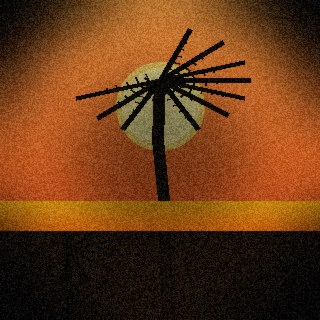
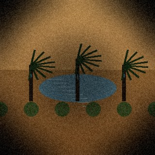
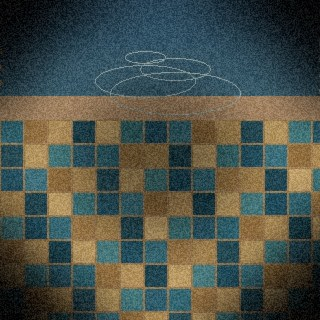
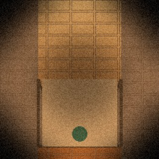

Xbox Mode Transitions
PC-to-Xbox switching prototype for Helix. Boot sequence, overlay nav, session handoff.
2025
→
Fix Hack Learn 2026
Designed and illustrated by Nick McVey · Xbox Design
Agenda
What we'll cover
The Big Picture
Framing the shift from static to dynamic
The Dynamic Medium
A new frame of mind for designing
Design Vocabulary
Terminology and principles to guide your LLM
Tools You Can Use Today
Practical tools and standards for vibe-coded prototypes
See It in Action
Live demos, whimsical examples, and delight

✦ What This IS
✕ What This ISN'T

The pattern
Cave paintings. Written language. The printing press. Computers. Each one didn't just speed things up. It unlocked entirely new ways to think and communicate. We're at that moment again.

The computer isn't just a tool. It's a medium. And AI is the bridge between your ideas and the screen.
The Dynamic Medium
Think of it like a canvas, a sketchbook, a piece of clay. Code is a medium for exploring ideas, invoking feelings, shaping experiences. It responds to your intent in real time. That's what makes it dynamic.
"A dynamic medium doesn't just present ideas. It responds to them."

The problem
"Make it look good" gets you generic output every time.
Constraints bind the space. Accessibility, Gestalt principles, UX laws, platform conventions. Goals define the direction. How you want the user to feel, what should delight them. Together they turn open-ended generation into focused, intentional design.
Universal truths
These are the guardrails that keep design grounded. Hierarchy, white space, alignment, proximity, contrast. Non-negotiables that separate good from generic.
Name them in your prompts and they become the boundaries your designs live within.
Creative direction
A director doesn't paint every frame. They set the intent. How should the user feel? What should delight them? Where should their attention land? Design goals turn vague ideas into clear creative direction.
When you give AI a goal, you stop asking for screens and start directing outcomes. Clarity of intent is the most powerful design tool you have.
Composition
Divide any frame into a 3×3 grid. Place key elements along the lines or at the intersections. Not dead center.
Your eye is naturally drawn to these 4 intersection points.
Layout & Navigation
Stack everything in one centered column. The reader has one path. Every element gets full attention before the next appears.
The default for long-form reading, newsletters, and mobile-first design.
Constraints
Your brain automatically organizes visual information. Grouping, separating, prioritizing before you're even aware of it. These 9 principles are perceptual constraints. They define what the eye will do whether you plan for it or not.
Name them in your prompts and your layouts stop fighting the viewer's brain.
Constraints
These aren't opinions. They're research-backed constraints on human behavior. Fitts's Law, Hick's Law, Miller's Law. They tell you what works and what doesn't before a single user touches the product.
Use them as constraints in your prompts. The output gets measurably better.
Constraints
When you ask for "a thing that shows more info on hover" you get something random. When you ask for a tooltip, everyone. Including the AI, knows exactly what you mean. Components are a shared constraint vocabulary.
Using precise component names constrains AI to proven patterns instead of improvisation.
component.gallery ↗ - 60+ components across real design systems
Goals
Visual hierarchy is where constraints meet goals. You use the rules. Size, weight, contrast, spacing. To direct the user's attention toward the outcome you want.
This is goal-setting in action. What do you want the user to see first, second, third? The numbered sequence on the right shows how hierarchy is felt before it's read.
Goals
Color is pure goal-setting. It defines how the user should feel. Calm, urgent, focused, playful. Contrast creates focus. Semantic color creates meaning. A limited palette creates cohesion.
Color
AI will give you safe, predictable palettes every time. Don't accept the first one. Generate a dozen. Compare them. Find the one that actually fits the mood, the brand, the moment.
The color wheel is your starting point. Your taste is the filter.
Techniques
A visual debugging tool turns your running product into an editable canvas. Click any element, tweak values, copy the output. No devtools spelunking required.
Drop it into any vibe-coded project. Cursor, VS Code, a plain HTML file. One script tag. Instant design feedback loop.
Techniques
A jig is a small harness you build into your UI. Click an element, drag it to exactly where it belongs, then read off the output. Not devtools. Not guessing. A real editor for your real design.
Build it once, use it for every spacing decision. The output tells you exactly what to hand back to the code.
Goals + Constraints
Case Study
Your toolkit
Design tools aren't going away. They're how you give AI the context it needs to do real work. Components, tokens, spacing systems. All of it becomes AI-readable.
Ask for an AI-ready file.
If you're working with a designer, ask them to structure it for AI. A messy file burns tokens fast. A well-structured one gives AI everything it needs.
Connect your tool to AI.
Figma MCP lets AI read the design file directly. Tokens, spacing, components, all of it. Design right in the canvas, with AI as your co-pilot.
Figma MCP ↗

The Ecosystem
The design tool landscape is moving fast. Figma is excellent. But it's not the only path. Open-source, self-hosted, and IDE-native tools are catching up quickly, and most of them work with AI out of the box.
Alternatives Worth Knowing
A VS Code extension that puts a full visual canvas right inside your editor. Design, iterate, and land directly in code. No tab switching required.
HTML/CSS-native canvas. Everything you design outputs real, production-ready code. Has an MCP server so AI agents can read and write to the canvas directly.
A full Figma alternative. Components, tokens, prototyping. Open source and self-hostable. Has an official MCP server that works with Claude, Cursor, and Copilot.
The new standard
A single markdown file that encodes your entire design system. Colors, typography, spacing, components. In a format every AI agent can read and apply consistently.
Originated with Google Stitch. Now the de facto standard for AI-first design documentation. Lives in your repo, versioned like code, readable by any LLM.
Your AI design collaborator
A Copilot skill that acts as the design team's AI representative. It helps engineers and PMs make better design decisions, reviews specs, coaches on UX patterns, and connects you with the right designer.
Review specs and UI choices against real design principles. Get feedback before it goes to a designer.
Understand the why behind patterns. Ask questions about hierarchy, flow, or accessibility in plain language.
When you need a human, Design Partner helps you frame the ask and connect with the right person on your team.
Say /design-partner in GitHub Copilot to invoke it.
The right tool for the job
Today's creative tools are built for every use case. They're powerful. But complex. What if you could build exactly what you need, nothing more?
AI makes purpose-built tools possible. Personal, precise, and yours.

See It in Action
Everything we've covered. Live. These are real things built with the techniques from this talk. You can build all of this.
What's possible
This weather data is live from Seattle right now. When you know how to ask, AI builds things that feel alive.
On this day in history
Walk around to explore. This voxel apartment was built in MagicaVoxel. And now it's a live, interactive presentation slide.
Storytelling with environment
A scene tells a story through light, space, and arrangement. This AI-generated kitchen uses warm tones, natural light, and deliberate clutter to feel lived in.
The same principles apply to a dashboard, a slide deck, or a prototype. Every visual choice is a narrative choice. Use WASD to explore.
The Living Document
Hover a word for inline context. Scroll to the end. Flip it over to see how it performed. Intelligent, responsive, and built to support the reader.
A document. But also a small interface.
Even bad news looks better when it’s well designed.

Marrakech, ’24
Sahara

Merzouga

Riad, Fès

Medina, ’24
✦
by the design team
When a designer talks about whitespace, they’re not describing empty space. They’re describing breathing room — the silence between notes that makes music meaningful. Apple’s product pages famously use whitespace to force your eye to rest, then look, then linger.
Negative space doesn’t just separate — it defines. The white around a headline is as responsible for that headline’s power as the type itself. Remove the breathing room and the words become wallpaper. Protect it, and the word becomes an event.
The WeightEvery element on a screen has visual mass. Typography is the densest of all — it carries meaning twice: once in what it says, once in how it looks. A headline set in a heavy serif commands attention before you’ve read a word. A body set in a light serif whispers.
Visual hierarchy is the invisible instruction set that tells your eye what to look at first, second, and third. Without it, every element screams at equal volume — and when everything demands attention, nothing gets it.
The BeatThere’s a rhythm to good design, as steady as a heartbeat. It comes from repeating spacing values, mirrored proportions, and the cadence of consistent sizing. When rhythm breaks — a card that’s 2px taller, a gap that doesn’t match the grid — something feels wrong even if a viewer can’t say why.
Contrast is the mechanism that makes rhythm visible. Not just light vs. Dark — but large vs. Small, quiet vs. Loud. Without contrast, there is no hierarchy. Without hierarchy, there is no story.
The SpaceEvery layout rests on a grid — an invisible scaffold of columns, rows, and gutters that most viewers will never consciously notice. The grid doesn’t constrain. It liberates. When you know where the walls are, you can decide which ones to push through.
The final act of any composition is restraint. It’s the decision not to add the element that seemed necessary — the whitespace you protect, the color you leave out. Good design isn’t about what’s present. It’s about what you had the discipline to leave behind.
With warm regards,
The Design Team
Design Systems & Practice
Your Digital Space
Spec papers, ideas, explorations, shipped work. What you’re into. How to reach you. Docs you’ve shared.
Make intranets cool again.
PC-to-Xbox switching prototype for Helix. Boot sequence, overlay nav, session handoff.
847 semantic tokens from the Xbox design system, formatted for AI tooling.
Quick Settings rethought for keyboard-first gaming PCs. Unified underlay & panel system.
What if every PM and designer had a browsable work identity? You’re looking at it.
Navigation patterns for the Xbox dashboard. 10-foot UI at the center.
A systematic approach to in-game and OS-level notifications on Xbox.
Eversince
Bladee · deep focus
Wrapping Up
What to take away, what to try first, and how to keep building.
What to do next
Ask for an AI-ready design file.
Whether it's Figma, Penpot, or Paper. A well-structured file with components and tokens gives AI everything it needs. A messy one burns through your context fast.
Connect your design tool to AI.
Figma MCP, Penpot MCP, Paper's native canvas. Whichever tool you use, let AI read the design system directly.
Use your vocabulary.
Not a list of words. The language you've been building this whole talk. Visual hierarchy, tokens, components, rhythm. Put it in every prompt.

The tools are ready. The principles are learnable.
Happy Fix Hack Learn.